Alianzas Estratégicas

 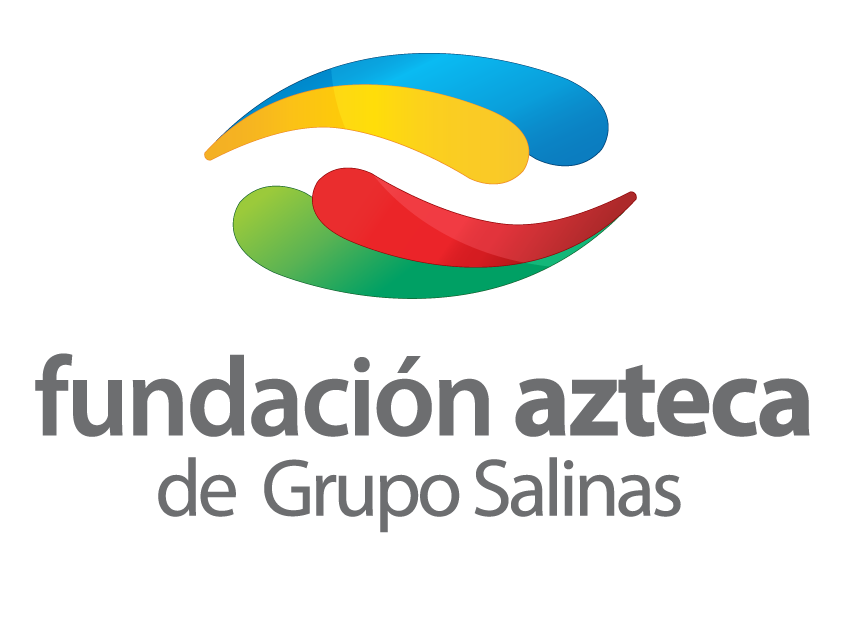
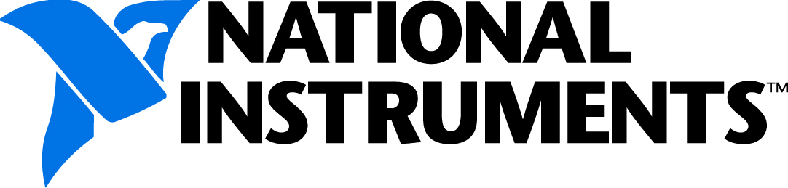
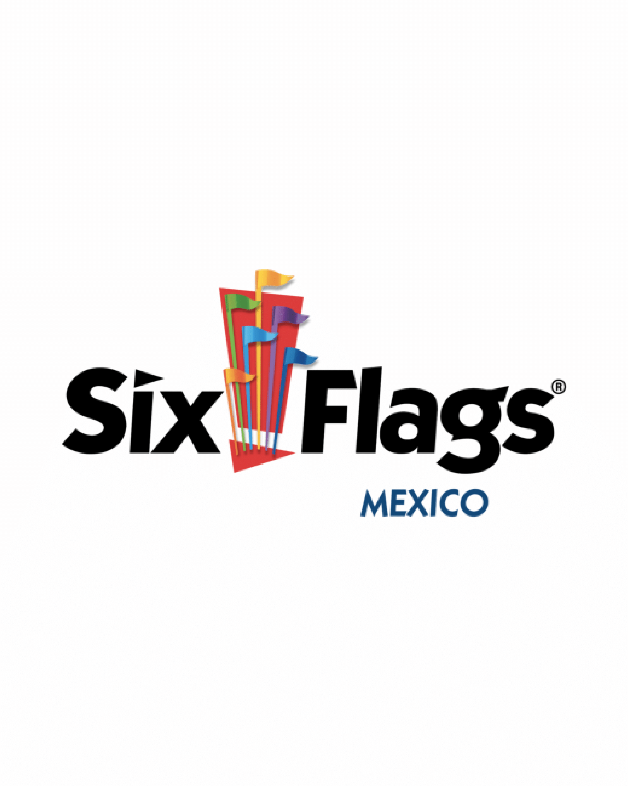
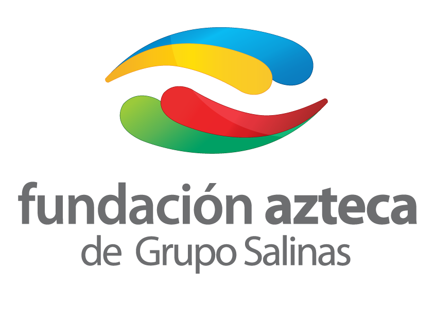
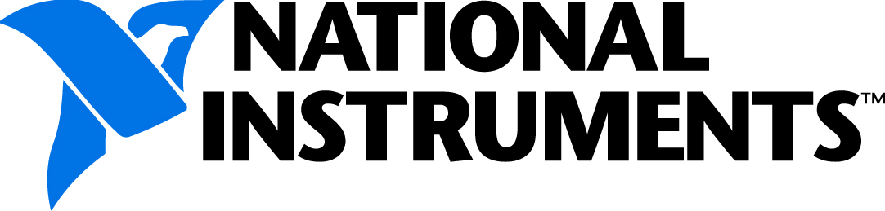
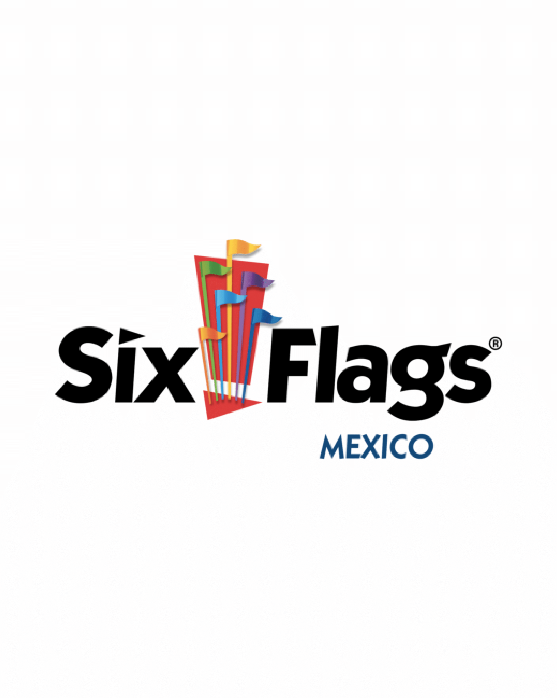
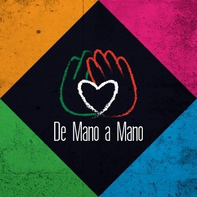
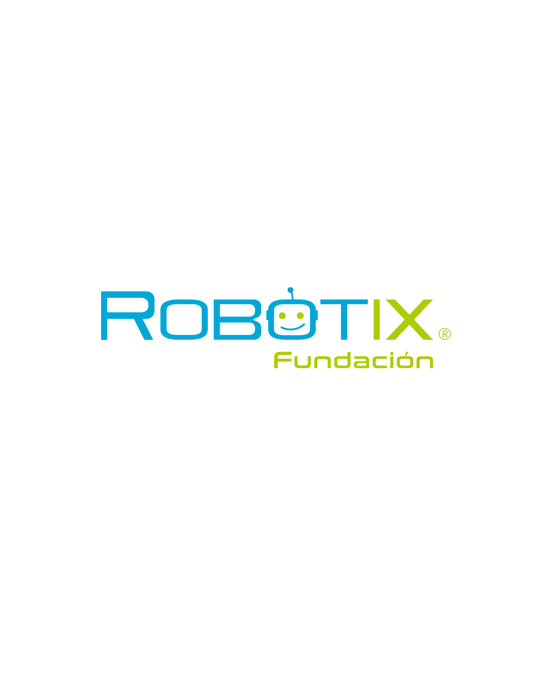
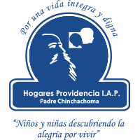
 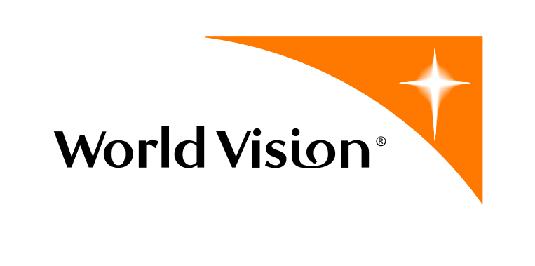
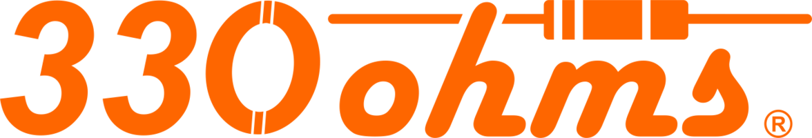
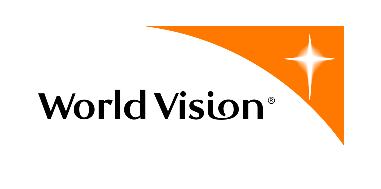
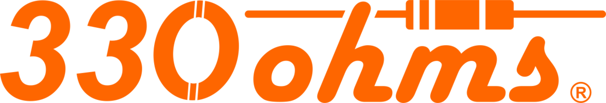
Nautilus 4010 es el equipo de robótica participante en FRC (FIRST Robotics Competition) del Tecnológico de Monterrey Campus Ciudad de México, que difunde la ciencia y tecnología en su comunidad.
Educar a jóvenes líderes con el fin de generar un cambio en el mundo, compartiendo y aplicando la ciencia y la tecnología.
Para 2025 seremos el equipo FIRST con mayor impacto, crecimiento y desarrollo de habilidades STEM y responsabilidad social en México. Queremos generar un cambio en nuestra comunidad creando agentes de cambio inspiradores y comprometidos con los ideales y valores del equipo.
En años de historia, Nautilus 4010 ha tenido un alcance de 100,000 personas impactando a niños y jóvenes de toda la República Mexicana.
CAD, mecánica, programación y electrónica, FLL y FTC.
Patrocinios, finanzas, logística, organización de eventos.
Recursos humanos, reclutamiento, alianzas estratégicas, proyectos sociales.
Redes sociales, documentación, imagen, fotografía.
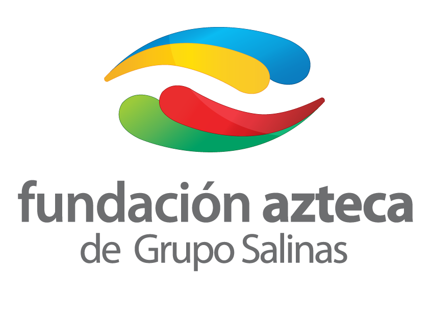
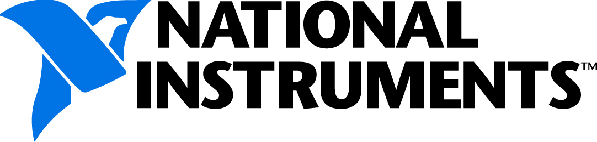
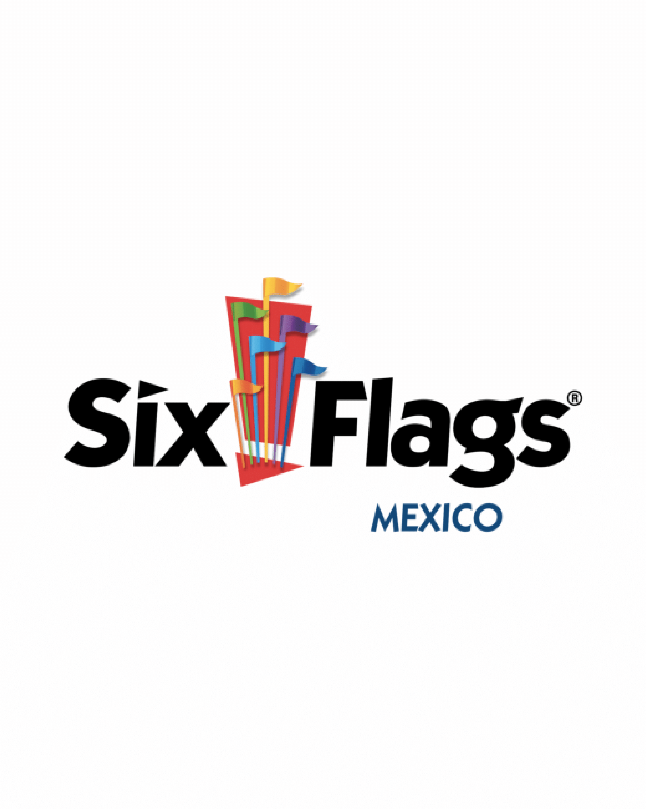